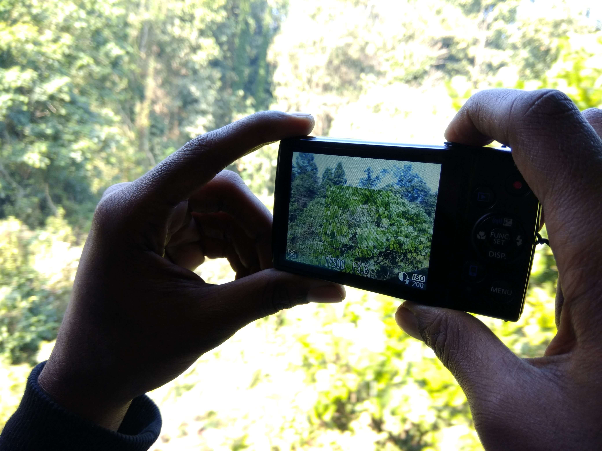
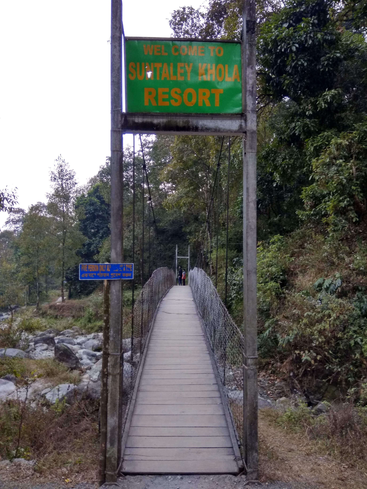
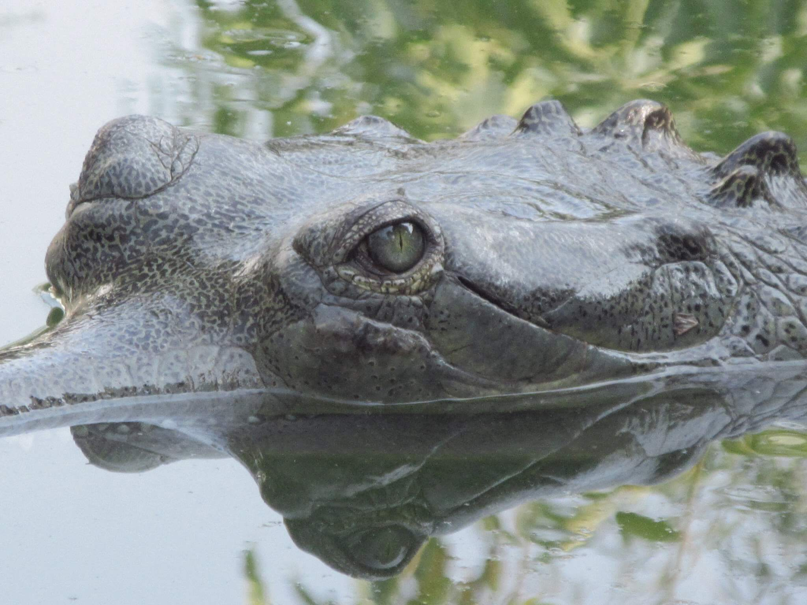

March to June: Dooars experience quite hot at this time but still attracts so many travelers. if you are planning to come at this time, don't forget to carry sunglasses, hats, water bottles and wear light cotton.
July to September: During this time Dooars receives rainfall. This is a bit of an off-season but if you want to enjoy the greenery, then you must visit this time. Hotels are offering great deals at this time.
Remember Sanctuaries are remain closed between 15th June to 15th September. if your main objective is to take a jungle safari, then you should avoid this time.
October to February: This is the best time to visit Dooars. The weather remains pleasantly cool throughout the day and it's the perfect time for visiting the sanctuaries and enjoying the beauty of nature. make sure your bookings are done in advance and don't forget to carry warm clothes.
Air : The nearest airport to Dooars is Bagdogra(IXB). Bagdogra Airport is well connected to the major cities of India. From the airport, you can book a pre-paid taxi from the pre-paid taxi counter to reach your hotel or resorts.
Train: There are not many trains that can straightforwardly contact you to Dooars from different spots in India. One such well-known train is Kanchankanya Express that leaves day by day from Kolkata (Sealdah Station). It leaves from Kolkata around evening time and arrives at New Mal Junction (Nearest Forest - Gorumara ) the next morning via NJP. From New Mal Junction, travelers can avail local auto to reach hotels or Resorts.
Jaldapara Forest - Nearest express train stoppage Hasimara Station
Buxa Jayanti - Nearest express train stoppage Alipurduar Junction Station
Bus: From Kolkata(Esplanade), you will find buses for Siliguri. From Siliguri, you can board a car or a bus to reach Malbazar.
Gorumara National Park Offers
Elephant Safari
Jeep Safari
Watch Tower Safari
Jaldapara National Park and Chilapata Forest Offers
Elephant Safari
Jeep Safari
Buxa Jayanti Forest Offers
Jeep Safari
Gorumara National Forest (Every watchtower has separate tickets)
Medla Watch Tower [Travelers need to travel some road using bullock cart]
Jatra Prasad + Rino Point [Most Popular]
Chukchuki
Chandrachur
Chapramari
Jaldapara National Forest
Jaldapara 3 No Watch Tower
Harindanga Watch Tower
Chilapatal Forest
Chilapata CC Line Watch Tower
Buxa Tiger Reserve
25 Mile Watch Tower
26 Mile Watch Tower
Jayanti Forest
TGN Watch Tower
Chuniya Watch Tower
Bhutia Basti Watch Tower
Checked into your Resort/ Lodge
Do a Watchtower safari (afternoon)
Do an early morning Jeep/Elephant Safari
Back to Resort/Lodge, have breakfast, and get ready for sightseeing
Book a local Car for sightseeing and cover
Bindu
Paren
Jhalong
Shyamsing
Rocky Island
Suntalekhola
Do an early morning Safari at Jatra Prasad Watchtower.
Back to Resort/Lodge, have breakfast
If you want to back to Kolkata then check out from the hotel and take a train from NJP Via Teesta Barrage at Gajalgoba. You can spend some time at Teesta Barrage.
OR
If you want to explore Jaldapara Forest. then book a local car for Jaldapara. On this route, you will found Murti River and South Khairbari Eco Park.
You can spend some time at Murti River and explore South Khairbari Eco Park.
Book the last Jeep safari at Chilapata forest.
Early morning Jeep/Elephant Safari
Back to Resort/Lodge, have breakfast
Check out from your Resort/Lodge and get ready for sightseeing
Book a local car and cover
Goagaon
Phuentsholing monastery (Bhutan)
Phuentsholing Crocodile Zoo (Bhutan)
If you want to go back to Kolkata then take a train from Hasimara Junction
OR
If you want to explore the Buxa Jayanti forest, then come to Jayanti
Have breakfast and get ready for sightseeing
Book a local car and cover
TGN watchtower
Pokhri lake
Chota Mahakal
Have Lunch
Do a Jeep safari in Jayanti forest.
Have breakfast and get ready for sightseeing
Santalabari
Buxa Fort
Lepchakha
Boating at Sikia Jhora
Do a Jeep Safari in Buxa Foreset
Check out from your Resort/Lodge and get ready for sightseeing
Book a local car and cover
Cooch Behar Palace
Madan Mohan Temple
Go to Cooch Behar Jn Railway Station and take a train for Kolkata.
For all Fiver watchtowers of Gorumara and Chapamari, there are 2 morning trips and 2 afternoon trips.
Xerox copy of the Id Cards of all members is required for Safari tickets.
Carry a Pen you have to fill a form for Safari.
Every day, after the last trip A Tribal Dance show is organized for the tourist. So, the last trip is costlier
The guide is mandatory for Jeep. So you need to pay extra for the guide also.
6 people are allowed in a Jeep
You can visit watchtowers for free if you took Jeep Sarafi in Jaldapara and Buxa Jayanti Forest but In Gorumara Forest you need to buy separate tickets for separate watchtowers
If you want to stay inside the Gorumara Forest, then you should try these West Bengal Forest Department Camps
You can also try Neora Jungle Camp by West Bengal State Forest Development Agency. If you want to stay inside Gorumara forest at a pocket-friendly price then you should try Neora Jungle Camp.
If you want to stay in Murti then you should try
If you want to stay inside the Chapramari Forest then you should try
If you want to stay inside the Jaldapara Forest then you should try
Hollong Tourist Lodge (Elephant Safari is available)
Aranya Tourism Property earlier Jaldapara Tourist Lodge (Elephant Safari is available)
If you want to stay inside the Chilapata Forest then you should try
Mendabari Jungle Camp (Elephant Safari is available)
If you want to stay inside the Bauxa Forest then you should try
Samosa
Momos
Fish pickle made of dry fish
Fermented bamboo shoots
Fish pakoras
Try a variety of chops (aloo, mocha, chicken, fish, vegetable)
Dak Bungalow (Chicken or Mottan)
Try typical Bengali thalis
Posted by: Shrinjoy Saha
table of content
Day 0 | Starting Point Kolkata
Day 2 | Explore Gorumara Jungle and sightseeing
Day 3 | Back To Kolkata OR Reach Jaldapara
Day 4 | Exploring Jaldapara and Back to Kolkata OR Reach Buxa Jayanti Jungle
A Little Background
The origin of the name Dooars comes from the Bengali word “Duar” which means door or gateway.
Best time to visit Dooars
Remember Sanctuaries are remain closed between 15th June to 15th September. if your main objective is to take a jungle safari, then you should avoid this time.
How to reach Dooars
Types of safari in Dooars
Watchtowers
Day by day plan
Day 0 | Starting Point Kolkata
Take an overnight bus or train from Kolkata to reach Dooars.
Day 1 | Explore Gorumara
Day 2 | Explore Gorumara Jungle and sightseeing

Suntalekhola
Day 3 | Back To Kolkata OR Reach Jaldapara
OR
If you want to explore Jaldapara Forest. then book a local car for Jaldapara. On this route, you will found Murti River and South Khairbari Eco Park.
You can spend some time at Murti River and explore South Khairbari Eco Park.
Day 4 | Exploring Jaldapara and Back to Kolkata OR Reach Buxa Jayanti Jungle

Crocodile Zoo - Phuentsholing (Bhutan)
OR
If you want to explore the Buxa Jayanti forest, then come to Jayanti
Day 5 | Explore Jayanti
Day 6 | Explore Buxa
Day 7 | Exploring Buxa Forest
Day 8 | Back to Kolkata
Back to Kolkata (The city of joy)
Things you need to know for Safari
Where to stay in Dooars
Jaldapara Elephant safari starts from here. If you are planning for an elephant safari then Hollong Tourist Lodge is best for you.
Food options
It's best to go with the local foods in Dooars. Enjoy local street foods like
But don’t forget to try the worldly famous Tea here.